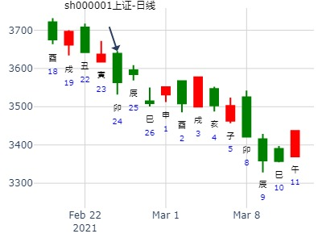
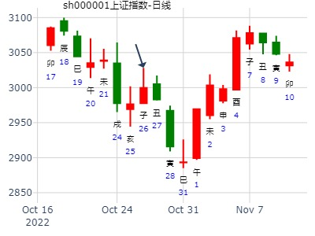
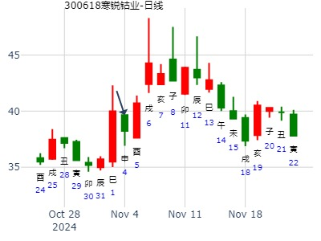

02年316，沈阳某建筑公司王总来咨询一工程情况，因工程较大，笔者亲自接待并预测。
1.此项目确有其事，且较大。
2.双方谈得较来。
3.对方无资金实力，高度紧张。
4.对方有欺骗行为，不实之处多处，主要体现在资金上。
5.此项目不可做，否则深陷
6.谋防破财。
癸卯月 癸未日
王总半信半疑，说辽宁盘锦一大型商厦，此前己谈二次，效果很好，对方出一能干之女子接待 ，称资金充裕有二千万在户
正谈着，对方下高速到沈阳，进行第三次商谈。对方要求乙方先垫资200万，随后甲方注资300万元，工程开始。
笔者告诉他，对方拿200万不一定拿得出来。
后二个半月无消息。6月初，反馈：
上次预测五天后，双方签约，同时给甲方注资100万，结果，对方约定的200万迟迟不到侠，反而要求乙方再注入300万元。
王总一看，己按预测的结果进行，再也不敢注入了，结果此项目便搁置下来，
双方新约定，当甲方再找到其他乙方，新资金注入后，返回王总一百万。
此卦官鬼持世，测生意等得官鬼持世，就一定要注意了。要防破耗，欺诈，官灾等。
此卦又加临玄武，凡官临玄武，多有不实，欺骗之象。
卦中财爻虽二现，但都休办无气，怎能赚到钱。
应爻临兄弟，与月建官鬼作合，无钱而骗，在所难免。
占事：元月30日-2月3日大盘涨跌？
公历起卦时间：2012年1月20日16时2分 (手工指定)
干支：辛卯年 辛丑月 庚辰日 甲申时 （日空：申酉）
神煞：驿马－寅 桃花－酉 日禄－申 贵人－丑，未
艮宫：山火贲 (六合) 艮宫：山火贲 (六合)
六神 伏神 本 卦 变 卦
腾蛇 官鬼丙寅木 ▅▅▅▅▅ 官鬼丙寅木 ▅▅▅▅▅
勾陈 妻财丙子水 ▅▅ ▅▅ 妻财丙子水 ▅▅ ▅▅
朱雀 兄弟丙戌土 ▅▅ ▅▅ 应 兄弟丙戌土 ▅▅ ▅▅ 应
青龙 子孙丙申金 妻财己亥水 ▅▅▅▅▅ 妻财己亥水 ▅▅▅▅▅
玄武 父母丙午火 兄弟己丑土 ▅▅ ▅▅ 兄弟己丑土 ▅▅ ▅▅
白虎 官鬼己卯木 ▅▅▅▅▅ 世 官鬼己卯木 ▅▅▅▅▅ 世
主帖标题: 1月20日川普上台，中美会不会开打贸易战？(铜钱卦）
公历日期：2017年1月3日21时 星期二
农历干支：丙申年 庚子月 庚寅日 丁亥时 (旬空：午未)
艮宫：山火贲(六合)
六神 伏神 【本 卦】
螣蛇 ▅▅▅▅▅ 官鬼寅木
勾陈 ▅▅ ▅▅ 妻财子水
朱雀 ▅▅ ▅▅ 兄弟戌土 应
青龙 子孙申金▅▅▅▅▅ 妻财亥水
玄武 父母午 ▅▅ ▅▅ 兄弟丑土
白虎 ▅▅▅▅▅ 官鬼卯木 世
占事：个股年卦：002486在2015走势。山火贲静卦。v2.md
时间: 2015-02-12 21时29分--妞妞妈妈
干支: 乙未年戊寅月己未日 (旬空: 子丑 )
贲静卦
勾陈 ▅▅▅▅▅ 官鬼寅木
朱雀 ▅▅ ▅▅ 妻财子水
青龙 ▅▅ ▅▅ 兄弟戌土 应
玄武 子孙申金▅▅▅▅▅ 妻财亥水
白虎 父母午火▅▅ ▅▅ 兄弟丑土
腾蛇 ▅▅▅▅▅ 官鬼卯木 世
主帖标题: 试测驰宏锌诸辛丑年寅卯辰月哪月顶？
公历起卦时间：2021年2月18日14时55分 (电脑自动)
干支：辛丑年 庚寅月 丁酉日 丁未时 （日空：辰巳）
神煞：驿马－亥 桃花－午 日禄－午 贵人－酉，亥
艮宫：山火贲 (六合) 艮宫：山火贲 (六合)
六神 伏神 本 卦 变 卦
青龙 官鬼丙寅木 ▅▅▅▅▅ 官鬼丙寅木 ▅▅▅▅▅
玄武 妻财丙子水 ▅▅ ▅▅ 妻财丙子水 ▅▅ ▅▅
白虎 兄弟丙戌土 ▅▅ ▅▅ 应 兄弟丙戌土 ▅▅ ▅▅ 应
螣蛇 子孙丙申金 妻财己亥水 ▅▅▅▅▅ 妻财己亥水 ▅▅▅▅▅
勾陈 父母丙午火 兄弟己丑土 ▅▅ ▅▅ 兄弟己丑土 ▅▅ ▅▅
朱雀 官鬼己卯木 ▅▅▅▅▅ 世 官鬼己卯木 ▅▅▅▅▅ 世
主帖标题: 沪深300明天走势如何
辛丑 庚寅 壬寅 己酉 (辰巳空) 辛丑年正月十二(2021/02/23 17:31:42)
山火贲
白虎 官鬼寅木 ／
腾蛇 妻财子水 ∥
勾陈 兄弟丙戌 ∥ 应
子孙申金：朱雀 妻财亥水 ／
父母午火：青龙 兄弟丑土 ∥
玄武 官鬼卯木 ／ 艮
涨
明天再摇一卦
08大家一起来，九缠烂打：上证2021.2.24收盘 个位数是几？
出生：2021 年 性别：男 占事：没填
排卦：元亨利贞网六爻在线排盘系统 https://www.china95.net
公历起卦时间：2021年2月24日7时17分 (电脑自动)
干支：辛丑年 庚寅月 癸卯日 丙辰时 （日空：辰巳）
艮宫：山火贲 (六合)
白虎 ▅▅▅▅▅ 官鬼寅木
腾蛇 ▅▅ ▅▅ 妻财子水
勾陈 ▅▅ ▅▅ 兄弟戌土 应
朱雀 子孙申金▅▅▅▅▅ 妻财亥水
青龙 父母午火▅▅ ▅▅ 兄弟丑土
玄武 ▅▅▅▅▅ 官鬼卯木 世

主帖标题: [原创]2007年3月26日上海大盘走势预测/已经更新/
摇卦预测上海大盘周一最后收阳还是收阴:
公历时间：2007年3月24日21时29分 星期六
农历时间：丁亥年二月初六亥时
干支：丁亥年 癸卯月 丁巳日 辛亥时 (旬空：子丑)
神煞：驿马—亥 桃花—午 日禄—午 贵人—酉，亥
艮宫：山火贲
六神 伏 神 【本 卦】
青龙 ▅▅▅▅▅ 官鬼丙寅木
玄武 ▅▅ ▅▅ 妻财丙子水
白虎 ▅▅ ▅▅ 兄弟丙戌土 应
螣蛇 子孙丙申金 ▅▅▅▅▅ 妻财己亥水
勾陈 父母丙午火 ▅▅ ▅▅ 兄弟己丑土
朱雀 ▅▅▅▅▅ 官鬼己卯木 世
未日官入库;今日财日破;下跌无疑!中间最大幅度不小于70点下跌!
[此贴子已经被作者于2007-3-24 21:30:02编辑过]
主帖标题: 请麦站看看
目前全仓的这个股票002342巨力索具，老师看看
求测人：某人，男，壬戌(1982年)，手工指定(起卦方式)
占问事宜：002342怎么样
公历：2016年3月8日14时53分，星期二。
干支：丙申年 辛卯月 己丑日 辛未时 (卦身：午)
主变卦 山火贲(艮宫) [空亡:午、未]
勾陈 ▅▅▅▅▅ 官鬼丙寅木
朱雀 ▅▅ ▅▅ 妻财丙子水
青龙 ▅▅ ▅▅ 兄弟丙戌土 应
玄武 子孙丙申金 ▅▅▅▅▅ 妻财己亥水
白虎 父母丙午火 ▅▅ ▅▅ 兄弟己丑土
螣蛇 ▅▅▅▅▅ 官鬼己卯木 世
捍卫老祖宗感通卦的尊严：测2020.3.9上证收盘走势？赛01
公历起卦时间：2020年3月7日15时25分 (电脑自动)
干支：庚子年 己卯月 己酉日 壬申时 （日空：寅卯）
神煞：驿马－亥 桃花－午 日禄－午 贵人－子，申
艮宫：山火贲 (六合) 艮宫：山火贲 (六合)
六神 伏神 本 卦 变 卦
勾陈 官鬼丙寅木 ▅▅▅▅▅ 官鬼丙寅木 ▅▅▅▅▅
朱雀 妻财丙子水 ▅▅ ▅▅ 妻财丙子水 ▅▅ ▅▅
青龙 兄弟丙戌土 ▅▅ ▅▅ 应 兄弟丙戌土 ▅▅ ▅▅ 应
玄武 子孙丙申金 妻财己亥水 ▅▅▅▅▅ 妻财己亥水 ▅▅▅▅▅
白虎 父母丙午火 兄弟己丑土 ▅▅ ▅▅ 兄弟己丑土 ▅▅ ▅▅
螣蛇 官鬼己卯木 ▅▅▅▅▅ 世 官鬼己卯木 ▅▅▅▅▅ 世
官鬼暗动，值班亥日反而跳空跌。
主帖标题: 杭萧钢构3.15壬戌一 -3.17甲子哪日顶？
公历起卦时间：2021年3月15日12时24分 (电脑自动)
干支：辛丑年 辛卯月 壬戌日 丙午时 （日空：子丑）
神煞：驿马－申 桃花－卯 日禄－亥 贵人－卯，巳
艮宫：山火贲 (六合) 艮宫：山火贲 (六合)
六神 伏神 本 卦 变 卦
白虎 官鬼丙寅木 ▅▅▅▅▅ 官鬼丙寅木 ▅▅▅▅▅
螣蛇 妻财丙子水 ▅▅ ▅▅ 妻财丙子水 ▅▅ ▅▅
勾陈 兄弟丙戌土 ▅▅ ▅▅ 应 兄弟丙戌土 ▅▅ ▅▅ 应
朱雀 子孙丙申金 妻财己亥水 ▅▅▅▅▅ 妻财己亥水 ▅▅▅▅▅
青龙 父母丙午火 兄弟己丑土 ▅▅ ▅▅ 兄弟己丑土 ▅▅ ▅▅
玄武 官鬼己卯木 ▅▅▅▅▅ 世 官鬼己卯木 ▅▅▅▅▅ 世
2019-05-05
上证50ETF在2019年5月6-6月6日巳月卦
时间: 2019-04-27 16时39分
干支: 己亥年戊辰月甲午日壬申时 (旬空: 辰巳 )
贲静卦
玄武 ▅▅▅▅▅ 官鬼寅木
白虎 ▅▅ ▅▅ 妻财子水
腾蛇 ▅▅ ▅▅ 兄弟戌土 应
勾陈 子孙申金▅▅▅▅▅ 妻财亥水
朱雀 父母午火▅▅ ▅▅ 兄弟丑土
青龙 ▅▅▅▅▅ 官鬼卯木 世
主帖标题: 关注：测神马股份何时涨停？
占事：神马股份4.10日最高上涨%个位？
公历起卦时间：2020年4月10日9时40分 (电脑自动)
干支：庚子年 庚辰月 癸未日 丁巳时 （日空：申酉）
神煞：驿马－巳 桃花－子 日禄－子 贵人－卯，巳
艮宫：山火贲 (六合)
六神 伏神 本 卦
白虎 官鬼丙寅木 ▅▅▅▅▅
螣蛇 妻财丙子水 ▅▅ ▅▅
勾陈 兄弟丙戌土 ▅▅ ▅▅ 应
朱雀 子孙丙申金 妻财己亥水 ▅▅▅▅▅
青龙 父母丙午火 兄弟己丑土 ▅▅ ▅▅
玄武 官鬼己卯木 ▅▅▅▅▅ 世
2022年第18周5月5至5月6日个股300491预测
公历时间：2022年4月29日16时43分
干 支：壬寅年 甲辰月 壬子日 戊申时
旬 空：辰巳 寅卯 寅卯 寅卯
艮宫：山火贲
六神 伏 神 【本 卦】
白虎 ▄▄▄▄▄ 官鬼丙寅木
螣蛇 ▄▄ ▄▄ 妻财丙子水
勾陈 ▄▄ ▄▄ 兄弟丙戌土 应
朱雀 子孙丙申金 ▄▄▄▄▄ 妻财己亥水
青龙 父母丙午火 ▄▄ ▄▄ 兄弟己丑土
玄武 ▄▄▄▄▄ 官鬼己卯木 世
周跌 ，四跌，五涨，，，，，跌，涨，，，，周跌
占事：002009
起卦方式：手动摇卦 在线排盘系统
公历时间：2013年5月6日9时26分
干 支：癸巳年 丁巳月 壬申日 乙巳时
旬 空：午未 子丑 (戌亥) 寅卯
艮宫：山火贲
白虎 ▄▄▄▄▄ 官鬼丙寅木
螣蛇 ▄▄ ▄▄ 妻财丙子水
勾陈 ▄▄ ▄▄ 兄弟丙戌土 应
朱雀 子孙丙申金 ▄▄▄▄▄ 妻财己亥水
青龙 父母丙午火 ▄▄ ▄▄ 兄弟己丑土
玄武 ▄▄▄▄▄ 官鬼己卯木 世
子孙申金出伏，财爻长生于申日。大涨。
上证指数5月20-24日行情预测？[六爻预测][原创]再人1
起卦时间：2013年05月18日12时07分 起卦方式：手摇硬币起卦
干支：癸巳年 丁巳月 甲申日 庚午时
旬空：午未 子丑 午未 戌亥
六神 伏神 艮宫：山火贲（六合）
【本 卦】
玄武 ▅▅▅▅▅ 官鬼丙寅木
白虎 ▅▅ ▅▅ 妻财丙子水
滕蛇 ▅▅ ▅▅ 兄弟丙戌土 应
勾陈 子孙丙申金 ▅▅▅▅▅ 妻财己亥水
朱雀 父母丙午火 ▅▅ ▅▅ 兄弟己丑土
青龙 ▅▅▅▅▅ 官鬼己卯木 世
山火贲静卦，5月前2周大盘，风生水起
时间: 2019-05-05 8时13分
干支: 己亥年戊辰月壬寅日甲辰时 (旬空: 辰巳 )
贲静卦
白虎 ▅▅▅▅▅ 官鬼寅木
腾蛇 ▅▅ ▅▅ 妻财子水
勾陈 ▅▅ ▅▅ 兄弟戌土 应
朱雀 子孙申金▅▅▅▅▅ 妻财亥水
青龙 父母午火▅▅ ▅▅ 兄弟丑土
玄武 ▅▅▅▅▅ 官鬼卯木 世

新冠疗效，贲静卦。
占事：最近二周大盘如何？
公历起卦时间：2016年6月13日15时50分 (在线摇卦)
丙申年 甲午月 丙寅日 丙申时 （日空：戌亥）
艮宫：山火贲 (六合) 艮宫：山火贲 (六合)
六神 伏神 本 卦 变 卦
青龙 官鬼丙寅木 ▅▅▅▅▅ 官鬼丙寅木 ▅▅▅▅▅
玄武 妻财丙子水 ▅▅ ▅▅ 妻财丙子水 ▅▅ ▅▅
白虎 兄弟丙戌土 ▅▅ ▅▅ 应 兄弟丙戌土 ▅▅ ▅▅ 应
腾蛇 子孙丙申金 妻财己亥水 ▅▅▅▅▅ 妻财己亥水 ▅▅▅▅▅
勾陈 父母丙午火 兄弟己丑土 ▅▅ ▅▅ 兄弟己丑土 ▅▅ ▅▅
朱雀 官鬼己卯木 ▅▅▅▅▅ 世 官鬼己卯木 ▅▅▅▅▅ 世
士兰微600460何时可买？ 何时宜买600460
时间: 2022-06-30 12:37
干支: 壬寅年丙午月甲寅日 (旬空: 子丑 )
贲静卦
玄武 ▅▅▅▅▅ 官鬼寅木
白虎 ▅▅ ▅▅ 妻财子水
腾蛇 ▅▅ ▅▅ 兄弟戌土 应
勾陈 子孙申金▅▅▅▅▅ 妻财亥水
朱雀 父母午火▅▅ ▅▅ 兄弟丑土
青龙 ▅▅▅▅▅ 官鬼卯木 世
11月亥月用神有气才行。
男 占事：002009
起卦方式：手动摇卦 在线排盘系统
公历时间：2013年7月8日8时8分
干 支：癸巳年 己未月 乙亥日 庚辰时
旬 空：午未 子丑 (申酉) 申酉
艮宫：山火贲
六神 伏 神 【本 卦】
玄武 ▄▄▄▄▄ 官鬼丙寅木
白虎 ▄▄ ▄▄ 妻财丙子水
螣蛇 ▄▄ ▄▄ 兄弟丙戌土 应
勾陈 子孙丙申金 ▄▄▄▄▄ 妻财己亥水
朱雀 父母丙午火 ▄▄ ▄▄ 兄弟己丑土
青龙 ▄▄▄▄▄ 官鬼己卯木 世
占事：今年运气如何？
排卦：元亨利贞网六爻在线排盘系统 http://www.china95.net
公历起卦时间：2016年7月1日15时59分 (在线摇卦)
干支：丙申年 甲午月 甲申日 壬申时 （日空：午未）
神煞：驿马－寅 桃花－酉 日禄－寅 贵人－丑，未
艮宫：山火贲 (六合) 艮宫：山火贲 (六合)
六神 伏神 本 卦 变 卦
玄武 官鬼丙寅木 ▅▅▅▅▅ 官鬼丙寅木 ▅▅▅▅▅
白虎 妻财丙子水 ▅▅ ▅▅ 妻财丙子水 ▅▅ ▅▅
腾蛇 兄弟丙戌土 ▅▅ ▅▅ 应 兄弟丙戌土 ▅▅ ▅▅ 应
勾陈 子孙丙申金 妻财己亥水 ▅▅▅▅▅ 妻财己亥水 ▅▅▅▅▅
朱雀 父母丙午火 兄弟己丑土 ▅▅ ▅▅ 兄弟己丑土 ▅▅ ▅▅
青龙 官鬼己卯木 ▅▅▅▅▅ 世 官鬼己卯木 ▅▅▅▅▅ 世
《周易》——山火贲 艮上离下
贲：亨。
小利有所往。彖曰：贲，亨；柔来而文刚，故亨。分刚上而文柔，故小利有攸往。天文也；文明以止，人文也。观乎天文，以察时变；观乎人文，以化成天下。象曰：山下有火，贲；君子以明庶政，无敢折狱。
贲静卦。8.18创业板399006走势。
姓名：入定观 起卦方式：手动摇卦
公历时间：2022年8月18日8时0分
干 支：壬寅年 戊申月 癸卯日 丙辰时
旬 空：辰巳 寅卯 辰巳 子丑
神 煞：驿马─巳 桃花─子 日禄─子 贵人─巳，卯
艮宫：山火贲
六神 伏 神 【本 卦】
白虎 ▄▄▄▄▄ 官鬼丙寅木
螣蛇 ▄▄ ▄▄ 妻财丙子水
勾陈 ▄▄ ▄▄ 兄弟丙戌土 应
朱雀 子孙丙申金 ▄▄▄▄▄ 妻财己亥水
青龙 父母丙午火 ▄▄ ▄▄ 兄弟己丑土
玄武 ▄▄▄▄▄ 官鬼己卯木 世
出生：没填 年 性别：男 占事：600400红豆股份9月23日涨跌
排卦：元亨利贞网六爻在线排盘系统 http://www.china95.net
公历起卦时间：2013年9月18日15时16分 (在线摇卦)
干支：癸巳年 辛酉月 丁亥日 戊申时 （日空：午未）
神煞：驿马－巳 桃花－子 日禄－午 贵人－酉，亥
艮宫：山火贲 (六合)
六神 伏神 本 卦
青龙 官鬼丙寅木 ▅▅▅▅▅
玄武 妻财丙子水 ▅▅ ▅▅
白虎 兄弟丙戌土 ▅▅ ▅▅ 应
腾蛇 子孙丙申金 妻财己亥水 ▅▅▅▅▅
勾陈 父母丙午火 兄弟己丑土 ▅▅ ▅▅
朱雀 官鬼己卯木 ▅▅▅▅▅ 世
占事：天山纺织 到9月12日走势
公历起卦时间：2014年9月3日14时7分 (在线摇卦)
干支：甲午年 壬申月 丁丑日 丁未时 （日空：申酉）
艮宫：山火贲 (六合)
青龙 ▅▅▅▅▅ 官鬼寅木
玄武 ▅▅ ▅▅ 妻财子水
白虎 ▅▅ ▅▅ 兄弟戌土 应
腾蛇 子孙申金▅▅▅▅▅ 妻财亥水
勾陈 父母午火▅▅ ▅▅ 兄弟丑土
朱雀 ▅▅▅▅▅ 官鬼卯木 世
占事：本周大盘？
公历起卦时间：2016年9月26日15时4分 (在线摇卦)
干支：丙申年 丁酉月 辛亥日 丙申时 （日空：寅卯）
贲静卦
腾蛇 ▅▅▅▅▅ 官鬼寅木
勾陈 ▅▅ ▅▅ 妻财子水
朱雀 ▅▅ ▅▅ 兄弟戌土 应
青龙 子孙申金▅▅▅▅▅ 妻财亥水
玄武 父母午火▅▅ ▅▅ 兄弟丑土
白虎 ▅▅▅▅▅ 官鬼卯木 世
主帖标题: 10月24-28日大盘涨跌卦
占事：10月24-28日大盘涨跌？
公历起卦时间：2011年10月21日16时37分 (手工指定)
干支：辛卯年 戊戌月 己酉日 壬申时 （日空：寅卯）
神煞：驿马－亥 桃花－午 日禄－午 贵人－子，申
艮宫：山火贲 (六合) 艮宫：山火贲 (六合)
六神 伏神 本 卦 变 卦
勾陈 官鬼丙寅木 ▅▅▅▅▅ 官鬼丙寅木 ▅▅▅▅▅
朱雀 妻财丙子水 ▅▅ ▅▅ 妻财丙子水 ▅▅ ▅▅
青龙 兄弟丙戌土 ▅▅ ▅▅ 应 兄弟丙戌土 ▅▅ ▅▅ 应
玄武 子孙丙申金 妻财己亥水 ▅▅▅▅▅ 妻财己亥水 ▅▅▅▅▅
白虎 父母丙午火 兄弟己丑土 ▅▅ ▅▅ 兄弟己丑土 ▅▅ ▅▅
腾蛇 官鬼己卯木 ▅▅▅▅▅ 世 官鬼己卯木 ▅▅▅▅▅ 世
主帖标题: 手摇 10月26日周卦 银行板块
公历：2020年10月24日17时8分，星期六。
干支：庚子年 丙戌月 庚子日 乙酉时 (卦身：午)
主变卦 山火贲(艮宫) [空亡:辰、巳]
螣蛇 ▅▅▅▅▅ 官鬼丙寅木
勾陈 ▅▅ ▅▅ 妻财丙子水
朱雀 ▅▅ ▅▅ 兄弟丙戌土 应
青龙 子孙丙申金 ▅▅▅▅▅ 妻财己亥水
玄武 父母丙午火 ▅▅ ▅▅ 兄弟己丑土
白虎 ▅▅▅▅▅ 官鬼己卯木 世
主帖标题: 测27日丑日大盘
公历起卦时间：2022年10月26日10时47分 (电脑自动)
干支：壬寅年 庚戌月 壬子日 乙巳时 （日空：寅卯）
艮宫：山火贲 (六合)
六神 伏神 本 卦
白虎 官鬼丙寅木 ▅▅▅▅▅
螣蛇 妻财丙子水 ▅▅ ▅▅
勾陈 兄弟丙戌土 ▅▅ ▅▅ 应
朱雀 子孙丙申金 妻财己亥水 ▅▅▅▅▅
青龙 父母丙午火 兄弟己丑土 ▅▅ ▅▅
玄武 官鬼己卯木 ▅▅▅▅▅ 世
妻财子水临5爻，明天丑土临日，明天恐要震荡。后天官护盘。
2982.90 -16.60 -0.55% 预测正确。

风生水起1028问600285羚锐制药周卦。贲静卦。.md
时间: 2022-10-28 16时52分
干支: 壬寅年庚戌月甲寅日 (旬空: 子丑 )
贲静卦
玄武 ▅▅▅▅▅ 官鬼寅木
白虎 ▅▅ ▅▅ 妻财子水
腾蛇 ▅▅ ▅▅ 兄弟戌土 应
勾陈 子孙申金▅▅▅▅▅ 妻财亥水
朱雀 父母午火▅▅ ▅▅ 兄弟丑土
青龙 ▅▅▅▅▅ 官鬼卯木 世


占事：000713己经连跌3天，研判未来一周走势
时间: 2000-11-16
干支: 庚辰年丁亥月戊寅日 (旬空: 申酉 )
贲 静 卦
朱雀 ▅▅▅▅▅ 官鬼寅木
青龙 ▅▅ ▅▅ 妻财子水
玄武 ▅▅ ▅▅ 兄弟戌土 应
白虎 子孙申金▅▅▅▅▅ 妻财亥水
腾蛇 父母午火▅▅ ▅▅ 兄弟丑土
勾陈 ▅▅▅▅▅ 官鬼卯木 世

注：此卦有另一同时间卦为贲之明夷，卦宫一样。
占事：日播时尚7。77后价
时间: 2021-11-24 13时50分
干支: 辛丑年己亥月丙子日 (旬空: 申酉 )
贲静卦
青龙 ▅▅▅▅▅ 官鬼寅木
玄武 ▅▅ ▅▅ 妻财子水
白虎 ▅▅ ▅▅ 兄弟戌土 应
腾蛇 子孙申金▅▅▅▅▅ 妻财亥水
勾陈 父母午火▅▅ ▅▅ 兄弟丑土
朱雀 ▅▅▅▅▅ 官鬼卯木 世
寒锐钴业未来二周-金手工
时间: 2024-11-03
干支: 甲辰年甲戌月辛未日 (旬空: 戌亥 )
贲静卦
腾蛇 ▅▅▅▅▅ 官鬼寅木
勾陈 ▅▅ ▅▅ 妻财子水
朱雀 ▅▅ ▅▅ 兄弟戌土 应
青龙 子孙申金▅▅▅▅▅ 妻财亥水
玄武 父母午火▅▅ ▅▅ 兄弟丑土
白虎 ▅▅▅▅▅ 官鬼卯木 世
亨。 小利有所往。

再人 上证指数12月7-11日行情预测？
起卦时间：2015年12月06日14时37分
干支：乙未年 丁亥月 丙辰日 乙未时 （子丑）
六神 伏神 艮宫：山火贲（六合）
【本 卦】
青龙 ▅▅▅▅▅ 官鬼丙寅木
玄武 ▅▅ ▅▅ 妻财丙子水
白虎 ▅▅ ▅▅ 兄弟丙戌土 应
滕蛇 子孙丙申金 ▅▅▅▅▅ 妻财己亥水
勾陈 父母丙午火 ▅▅ ▅▅ 兄弟己丑土
朱雀 ▅▅▅▅▅ 官鬼己卯木 世
断：全周为震荡略跌行情（兄弟戌土暗动劫财，行情看跌；但也与旺相之官鬼卯木相合，贪合忘克）。
马后炮：此卦己午日并未冲亥子财暗动？？？
旬空入墓，但是得月令，在墓中冲不起？
亥子水入日墓，非得子日值日自己出墓。
欧非光子月走势。 燕山月
时间: 2015-12-10
干支：乙未年 戊子月 庚申日 丁亥时 （日空：子丑）
贲 静 卦
腾蛇 ▅▅▅▅▅ 官鬼寅木
勾陈 ▅▅ ▅▅ 妻财子水
朱雀 ▅▅ ▅▅ 兄弟戌土 应
青龙 子孙申金▅▅▅▅▅ 妻财亥水
玄武 父母午火▅▅ ▅▅ 兄弟丑土
白虎 ▅▅▅▅▅ 官鬼卯木 世
财福得日月可以涨一泼。

贲静卦
玄武 ▅▅▅▅▅ 官鬼寅木
白虎 ▅▅ ▅▅ 妻财子水
腾蛇 ▅▅ ▅▅ 兄弟戌土 应
勾陈 子孙申金▅▅▅▅▅ 妻财亥水
朱雀 父母午火▅▅ ▅▅ 兄弟丑土
青龙 ▅▅▅▅▅ 官鬼卯木 世